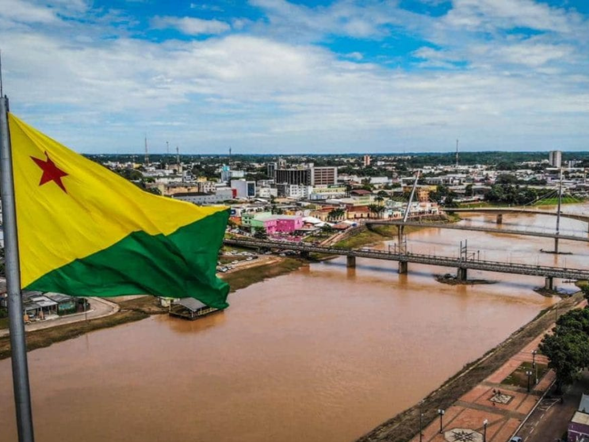

O Acre é um estado localizado na região Norte do Brasil, conhecido por sua vasta área de floresta amazônica, rica biodiversidade e importante herança cultural. Fazendo fronteira com a Bolívia e o Peru, o estado possui forte influência indígena e seringueira, marcada pela história de luta pela preservação ambiental liderada por figuras como Chico Mendes. Sua capital, Rio Branco, concentra grande parte da população e das atividades econômicas locais. O Acre também se destaca pela valorização da sustentabilidade, do extrativismo e da preservação da Amazônia, sendo um símbolo da relação entre desenvolvimento e conservação ambiental no Brasil.
